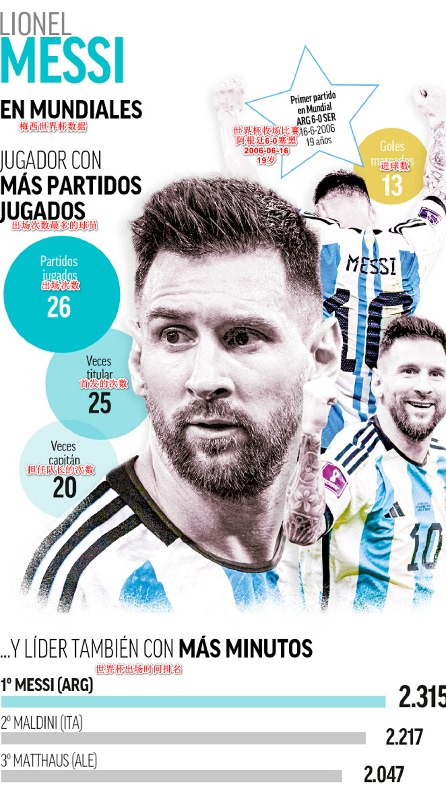
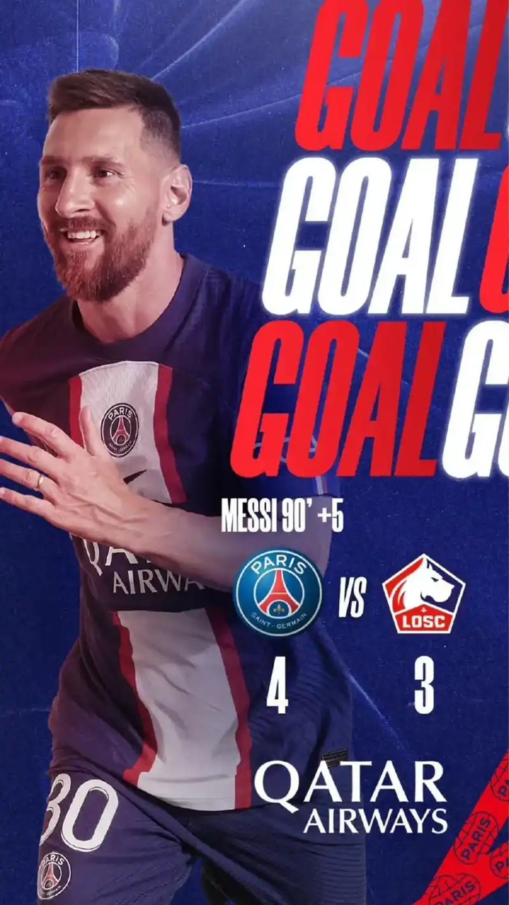
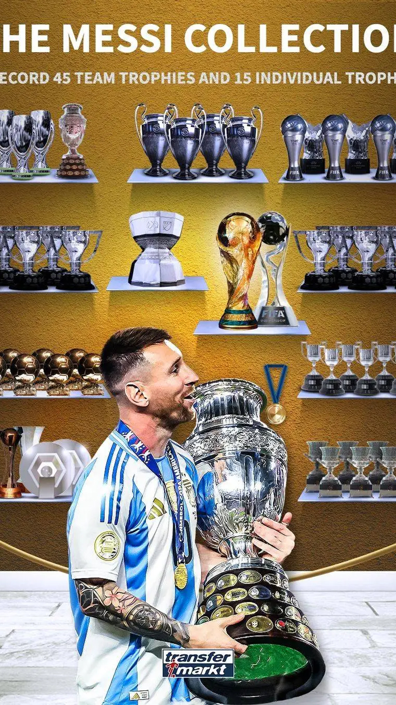
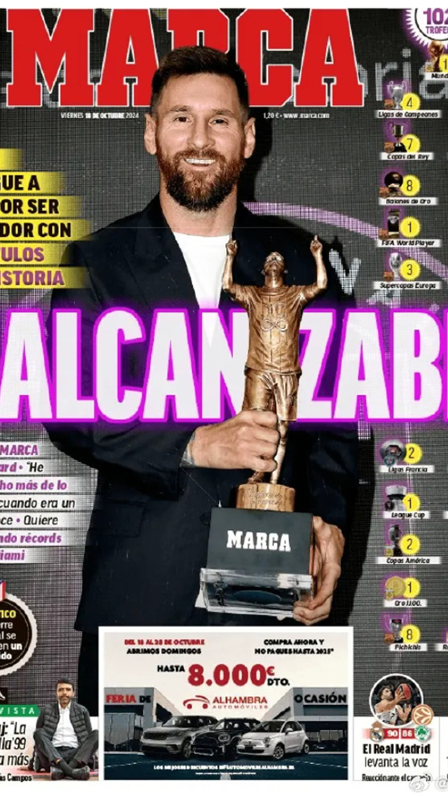

梅西夺生涯第46冠，继续独居历史第一
在美职联最新一轮比赛中，梅西所在的迈阿密国际3比2战胜哥伦布机员，提前两轮锁定2024-2025赛季美职联常规赛冠军。这是迈阿密国际队史首个常规赛冠军。梅西在比赛中表现出色，先是单刀破门，然后打入了任意球世界波，这是其职业生涯打入的第66个任意球，超越贝克汉姆，追平排名任意球进球榜第3位的莱格罗塔列、小罗。
查看更多

梅西是五大联赛上一个连续三场进任意球的球员
最新消息显示，在德甲法兰克福对阵斯图加特的比赛中，埃及前锋马尔穆什再次攻入一粒任意球，这也让他连续第三场比赛有任意球进账。数据机构Opta公布了上一个在五大联赛中连续三场比赛都进任意球的球员的信息，那就是历史第一人梅西。这一壮举发生在2019年3月至4月间。
查看更多

梅西2024年终战闪耀，回顾传奇生涯历年进球数据
南美世预赛第12轮中，阿根廷队以1-0战胜秘鲁，梅西在其2024年的最后一战中再度闪耀。至此，梅西在2024年的比赛征程画上了圆满的句号。2024年，梅西总共出场36次，打进29球，比2023年多出1球。特别值得一提的是2012年，这是梅西职业生涯乃至足球历史上最为辉煌的一年。他在这一年间惊人地打进了91球，打破了之前德国球员盖德·穆勒保持的自然年进球世界纪录。
查看更多

梅西何以成为“足坛慈善第一人”？
梅西作为当今世界身价最高的球员之一，坐拥大笔财富，但他也是全世界球迷的优质偶像，不仅因为他的才华，也因为他的人品，其中，“足坛慈善第一人”的称谓，便是一种体现。2007年，梅西发起成立了以自己的名字命名的慈善基金会（Leo Messi Foundation），并将公益的方向铆定在儿童项目。梅西基金会的目标就是为了帮助各国看不起病的孩子们恢复健康。
查看更多